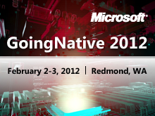NEW! GoingNative is happening again in 2013!! Register now! GoingNative 2012 is a 48 hour, globally live-streamed technical event for those who push the boundaries of general purpose computing by expl…
Day 2 Keynote - Herb Sutter: C++11, VC++11 and Beyond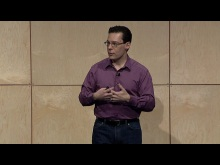[WMV] [1:32:00] [2012/01/29]This talk will cover:Which key features in C++11 will most change the way you write code: the features that directly affect C++ style, coding idioms, and the guidance in…
Clang: Defending C++ from Murphy's Million Monkeys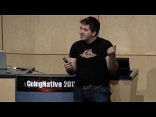[WMV] [1:00:57] [2012/01/18]Were we to craft a Lenox Globe of programming languages, C++ might be followed by a famous cautionary phrase: Here Be Dragons. The language can be complex and daunting to programmers who are…
Interactive Panel: Ask Us Anything!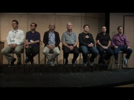[WMV] [1:32:21] [2012/01/16]To end the event, why not have all the speakers on stage to answer any questions you may have, ones that formed as your mind was bent over the last 48 hours. Here are some C++ titans in front…
A Concept Design for C++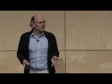[WMV] [1:01:10] [2012/01/16]C++ does not provide facilities for directly expressing what a function template requires of its set of parameters. This is a problem that manifests itself as poor error messages, obscure…
Static If I Had a Hammer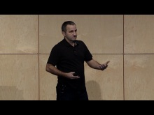[WMV] [1:00:30] [2012/01/16]All right, the C++11 Standard is done. Can we go home? Definitely not - progress waits for no one. For all its might, C++11 is not addressing a few basic needs in template programming.…
Interactive Panel: The Importance of Being Native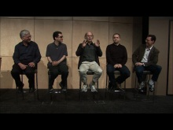[WMV] [1:16:57] [2012/01/12]In 2011, we saw a resurgence of interest in native code - in C++ in 2011 and in C++11. Is this "C++ Renaissance" a flash in the pan? Is it a long-term trend? This is…
STL11: Magic && Secrets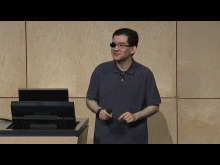[WMV] [0:59:07] [2012/01/11]The C++ Standard Library expanded and evolved massively between C++98/03 and C++11. It's easy to forget the magnitude of these changes, because they happened gradually and…
Variadic Templates are Funadic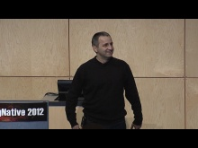[WMV] [1:00:34] [2012/01/11]Variadic templates are arguably the most profound change in the core language brought about by C++11. Curiously, however, the C++ community still tiptoes carefully around them:…
Threads and Shared Variables in C++11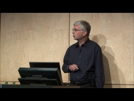[WMV] [0:59:58] [2012/01/11]The C++11 standard introduces threads into the language, and carefully defines the meaning of variables shared between threads. The design is based on the idea that meaningful multithreaded…
Day 1 Keynote - Bjarne Stroustrup: C++11 Style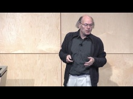[WMV] [1:29:48] [2012/01/10]We know how to write bad code: litter our programs with casts, macros, pointers, naked new and deletes, and complicated control structures. Alternatively (or additionally), we could obscure every…